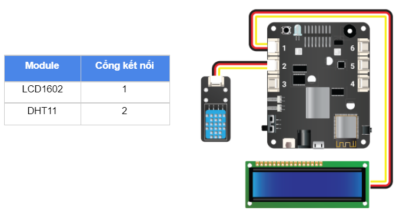

Bài học 11: Theo dõi nhiệt độ, độ ẩm trên LCD
Mục tiêu
Trong bài học này, chúng ta cùng tìm hiểu cảm biến DHT11 - một loại cảm biến đo được nhiệt độ và độ ẩm của môi trường xung quanh. Chúng ta sẽ lập trình hiển thị các thông tin đọc được từ cảm biến này lên màn hình LCD mà chúng ta đã làm quen ở bài học trước.
Thiết bị cần sử dụng

Kết nối phần cứng
{kind=link}
Viết chương trình
Mở phần mềm uPyCraft.
Tạo một file chương trình mới (
File > New) và lưu với tên main.py bằng cách chọn menuFile > Save….Copy đoạn code sau, click vào nút
DownloadAndRunđể chạy chương trình.
from lcd_1602 import LCD1602
import dht
dht11 = dht.DHT11(Pin(PORTS_DIGITAL[1][0]))
lcd1602 = LCD1602(0)
while True:
dht11.measure()
lcd1602.move_to(0, 0)
lcd1602.putstr(('Nhiet do: ' + str(dht11.temperature())))
lcd1602.move_to(0, 1)
lcd1602.putstr(('Do am: ' + str(dht11.humidity())))
time.sleep(5)
lcd1602.clear()
Giải thích chương trình
import dht
Khai báo thư viện dht để có thể làm việc được với cảm biến DHT11.
dht11 = dht.DHT11(Pin(PORTS_DIGITAL[1][0]))
Tạo đối tượng và khai báo chân IO nối với cảm biến. Do module cảm biến DHT11 nối vào cổng 2 nên chân IO sẽ là Pin(PORTS_DIGITAL[1][0]) (vì cảm biến này chỉ dùng 1 chân tín hiệu Digital).
Hàm Pin(PORTS_DIGITAL[X][Y]) có các tham số như sau:
Xlà tham số có giá trị 0~5 tương ứng với PORT 1 ~ PORT6
Ylà tham số 0 hoặc 1 tương ứng với tín hiệu 1 và tín hiệu 2 của mỗi PORT.
dht11.measure()
Cập nhật nhiệt độ từ cảm biến DHT11.
dht11.temperature()
dht11.humidity()
Đọc và trả về độ ẩm (Humidity) và nhiệt độ (Temperature) của môi trường từ cảm biến.
str(dht11.temperature())
str(dht11.humidity())
Vì màn hình LCD 1602 nhận dữ liệu dạng văn bản. Trong khi giá trị trả về từ cảm biến là dạng số nên ta dùng hàm str() để chuyển kiểu dữ liệu sang dạng văn bản. Cấu trúc hàm str() cụ thể như sau:
str(VALUE)
Trong đó VALUE là giá trị cần chuyển đổi.
lcd1602.move_to(0, 0)
lcd1602.putstr(('Nhiet do: ' + str(dht11.temperature())))
lcd1602.move_to(0, 1)
lcd1602.putstr(('Do am: ' + str(dht11.humidity())))
Đoạn lệnh này in ra kết quả đọc được trên 2 dòng của màn hình.
Sau khi chạy chương trình, bạn sẽ thấy giá trị nhiệt độ và độ ẩm được hiển thị trên màn hình LCD. Bạn thử thổi liên tục vào cảm biến để thấy sự thay đổi cả về nhiệt độ và độ ẩm.